KV cache, memory hierarchy, autoregression—and how to predict the limiter before profiling.
KV-кэш, иерархия памяти, авторегрессия — и как предсказать лимитер до профилирования.
The stove is ready. The ingredients are not.Плита готова. Ингредиенты — нет.
A GPU can have abundant arithmetic and still wait for bytes. The first task is to name which bytes, from where, and how often.У GPU может быть изобилие арифметики, и все же он ждет байты. Первая задача — назвать, какие байты, откуда и как часто.
One request we can follow token by tokenЗапрос, который видно токен за токеном
Recorded natural request · Qwen2.5-1.5BЕстественный запрос из записи · Qwen2.5-1.5B
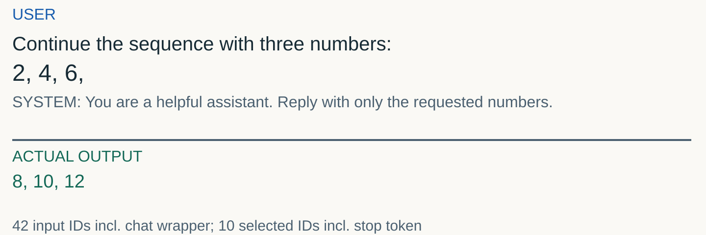
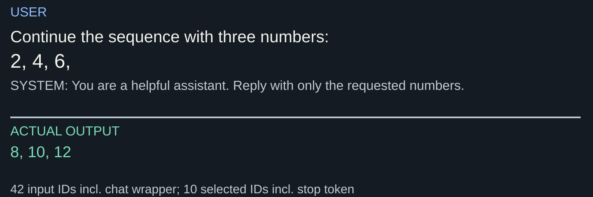
Recorded natural request · Qwen2.5-1.5B. RTX 5070 Ti, FP16, SDPA, greedy, at most 24 new tokens. One warmed instrumented replay. Timing is local, not HTTP latency or a performance baseline. Recorded evidence / method.Естественный запрос из записи · Qwen2.5-1.5B. RTX 5070 Ti, FP16, SDPA, greedy, не более 24 новых токенов. Один прогретый инструментированный replay. Тайминги локальные: не HTTP-латентность и не база производительности. Записанное свидетельство / метод.
“Slow GPU” names no mechanism«Медленный GPU» не называет механизм
Five competing hypothesesПять конкурирующих гипотез
LimiterЛимитер
Constrained quantityОграниченная величина
Discriminating evidenceРазличающие свидетельства
computeвычисления
operations/soperations/s
kernel near compute roofкернел у вычислительного потолка
A percentage is not a diagnosisПроцент — не диагноз
What does “GPU 99%” mean?Что значит «GPU 99%»?
Common inferenceОбычный вывод
“Utilization is high, therefore compute is saturated.”«Утилизация высокая — значит, вычисления насыщены.»
A busy interval may contain memory stalls, tiny kernels, late work, or alternating phases. Diagnose with operations, bytes, shapes, timelines, and counters.Занятый интервал может содержать простои памяти, крошечные кернелы, позднюю работу или чередующиеся фазы. Диагностируйте операциями, байтами, шейпами, таймлайнами и счетчиками.
From dependency graph to profiler evidenceОт графа зависимостей к свидетельствам профилировщика
Every hypothesis starts with four quantitiesКаждая гипотеза начинается с четырех величин
Dimension the problemРазмерьте задачу
PERFORMANCE ACCOUNTING
Operations · bytes moved · live bytes · elapsed timeОперации · перемещенные байты · живые байты · прошедшее время
Operations and traffic predict rate ceilings; live bytes predict fit; elapsed time tells whether the chosen interval includes queueing, transfers, or asynchronous work.Операции и трафик предсказывают потолки скорости; живые байты предсказывают вместимость; прошедшее время говорит, включает ли выбранный интервал очереди, передачи или асинхронную работу.
By the end, you can predict and falsifyВ конце курса вы сможете предсказывать и фальсифицировать
Observable outcomesНаблюдаемые результаты
01
TraceПроследите one decoder step and separate the serial token axis from parallel work inside it. один шаг декодера и отделите серийную токен-ось от параллельной работы внутри нее.
02
DeriveВыведите weight traffic, arithmetic intensity, ridge point, and KV bytes per token. трафик весов, арифметическую интенсивность, точку хребта и байты KV на токен.
03
PredictПредскажите how prompt, output, batch, GQA, and dtype move the active constraint. как промпт, выход, батч, GQA и dtype двигают активное ограничение.
04
ChooseВыберите wall clock, PyTorch profiler, Nsight Systems, or Nsight Compute for the question. настенные часы, PyTorch profiler, Nsight Systems или Nsight Compute под вопрос.
“
A bottleneck is a relationship between a workload, an implementation, and a machine—not a permanent property of a model.Узкое место — это отношение между нагрузкой, реализацией и машиной, а не постоянное свойство модели.
Lecture thesisТезис лекции
01
Trace one tokenПроследим один токен
The exact prompt, every decoder operation, and the first two output IDs.Точный промпт, каждая операция декодера и первые два выходных ID.
The prediction starts at the assistant prefixПредсказание начинается с префикса ассистента
Recorded chat boundary · 42 input IDsЗаписанная граница чата · 42 входных ID
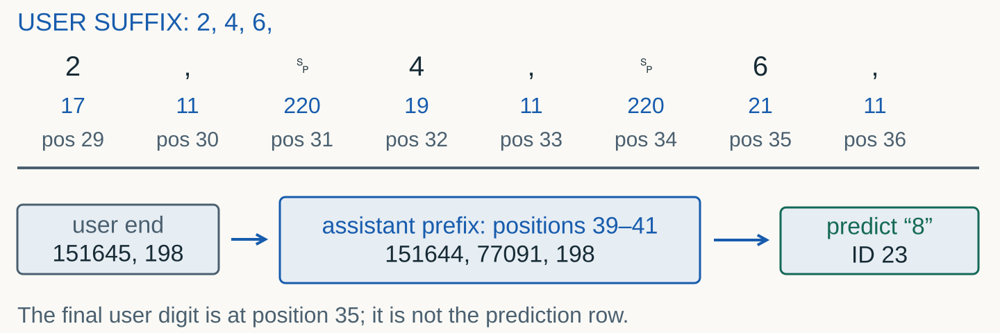
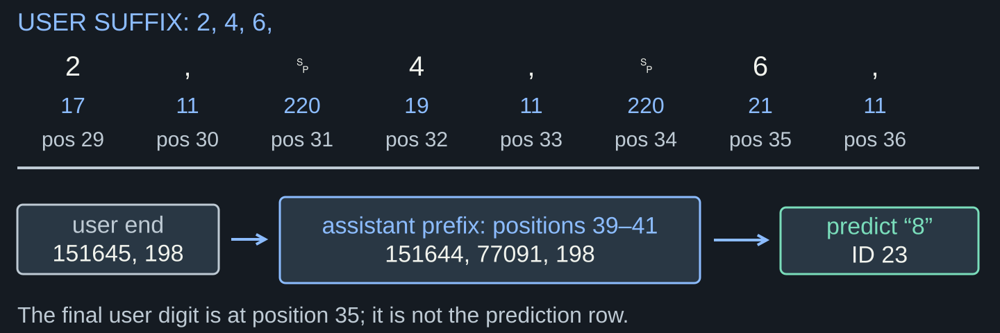
Recorded chat boundary · 42 input IDs. Position indices start at zero. The newline at position 41 is the last input. Its contextual representation, after all 28 blocks, predicts the first answer token. Arithmetic, capture and pinned implementation.Записанная граница чата · 42 входных ID. Индексы позиций — от нуля. Перевод строки на позиции 41 — последний вход. Его контекст после всех 28 блоков предсказывает первый токен ответа. Арифметика, запись и закреплённая реализация.
An integer ID selects one learned vectorЦелочисленный ID даёт выученный вектор
Captured embedding slice · calculated FP16 payload. E[198] selects a row, not the scalar value 198. The same ID has the same initial embedding at both newline positions. Context and RoPE enter later. Arithmetic, capture and pinned implementation.Захваченный срез эмбеддингов · расчётный FP16. E[198] выбирает строку, а не скаляр 198. Тот же ID даёт тот же начальный вектор на обеих позициях перевода строки. Контекст и RoPE входят позже. Арифметика, запись и закреплённая реализация.
Two residual additions in one decoder blockДва остаточных сложения в одном декодер-блоке
X, h₁[B, \(S_{q}\), d]Input and normalized features at each new positionВход и нормированные признаки каждой новой позиции
r, u; dfeature indices; widthиндексы признаков; ширинаReduce the last axis: dim=-1, length 1536 in QwenРедукция по последней оси: dim=-1, 1536 в Qwen
γ; εgain [d]; scalarусиление [d]; скалярLearned gain; ε = 10⁻⁶. Features are dimensionlessВыученный гейн; ε = 10⁻⁶. Признаки безразмерны
Toy row [1,2,3,4]: mean square = 7.5; h₁,₀ = 1 / √7.500001 ≈ 0.365148.Вектор [1,2,3,4]: средний квадрат = 7.5; h₁,₀ = 1/√7.500001 ≈ 0.365148.
Toy d=4, γ=1. Mean square is not variance (1.25 here). Qwen computes the mean square in FP32. Full derivation and sources.Игрушка: d=4, γ=1. Средний квадрат — не дисперсия (1.25). Qwen считает его в FP32. Полный вывод и источники.
Three learned projections make Q, K and VТри выученных проекции дают Q, K и V
Equation · axes · worked exampleФормула · оси · разбор примера
Q; K, V[B,\(S_{q}\),1536]; [B,\(S_{q}\),256]Sum over input features; preserve batch and positionsСумма по входным признакам; батч и позиции сохраняются
Toy JSON stores W as [in,out]: use h₁ @ W + b there. Full matrices and K/V arithmetic are in Book. Full derivation and sources.В игрушечном JSON W хранится как [in,out]: используйте h₁ @ W + b. Полные матрицы и арифметика K/V — в Book. Полный вывод и источники.
Pinned Qwen2.5-1.5B configuration · GQA. reshape splits features into heads. transpose changes axis order. Grouped-query attention shares K/V across six Q heads; it does not share the Q projections. Arithmetic, capture and pinned implementation.Закреплённый конфиг Qwen2.5-1.5B · GQA. reshape делит признаки на головы. transpose меняет порядок осей. Grouped-query attention делит K/V между шестью Q-головами; Q-проекции не делятся. Арифметика, запись и закреплённая реализация.
RoPE rotates Q and K using the positionRoPE вращает Q и K по позиции
Equation · axes · worked exampleФормула · оси · разбор примера
\(\phi=p/\theta^{2r/d_h}\)angle in radiansугол в радианахp: absolute position; θ: RoPE base, not an anglep: абсолютная позиция; θ — база RoPE, не угол
r, r+\(d_{h}\)/2paired feature indicesпары индексов признаковSplit-half pairs: toy (0,2), (1,3); real (r,r+64)Пары половин: игрушка (0,2), (1,3); реально (r,r+64)
Q′, K′; Vsame tensor shapesте же формы тензоровApply the same rotation rule to K; leave V unchangedК K — то же правило поворота; V не меняется
Toy p=2, \(d_{h}\)=4, θ=10,000: angles 2 and 0.02 rad. cos(2)≈−0.416, sin(2)≈0.909.Игрушка: p=2, \(d_{h}\)=4, θ=10,000: углы 2 и 0.02 рад. cos(2)≈−0.416, sin(2)≈0.909.
Real Qwen uses \(d_{h}\)=128 and θ=1,000,000. Rotation mixes a feature pair, not token positions. Full derivation and sources.Реальный Qwen использует \(d_{h}\)=128 и θ=1,000,000. Поворот смешивает пару признаков, не позиции токенов. Полный вывод и источники.
Causal scores compare only available positionsКаузальные оценки видят лишь доступные позиции
Equation · axes · worked exampleФормула · оси · разбор примера
i; j; rquery; key; feature indicesзапрос; ключ; признакSum over r. Causal mask uses absolute positionsСумма по r. Маска — по абсолютным позициям
h; g(h)=⌊h/6⌋Q-head; KV-head indicesиндексы Q- - и KV-головQ heads 0–5 use KV 0; Q heads 6–11 use KV 1Q-головы 0–5 берут KV 0; 6–11 — KV 1
s[B,\(H_{q}\),\(S_{q}\),\(S_{kv}\)]Prefill [1,12,42,42]; next decode [1,12,1,43]Prefill [1,12,42,42]; decode далее [1,12,1,43]
Toy \(d_{h}\)=4: divide each dot product by 2. Last-row scores ≈ [−0.424, 1.506, 1.612].Игрушка \(d_{h}\)=4: каждое произведение / 2. Последняя строка ≈ [−0.424, 1.506, 1.612].
Mask forbidden keys with −∞. Tensor code needs GQA head mapping and transpose(-2,-1), not k.T. Full derivation and sources.Запрещённые ключи — −∞. В коде тензоров нужны GQA-мэппинг и transpose(-2,-1), не k.T. Полный вывод и источники.
Softmax turns scores into a weighted value sumSoftmax: оценки → взвешенная сумма значений
Equation · axes · worked exampleФормула · оси · разбор примера
Weights sum to one over allowed keys. Book derives all three V rows used here. Full derivation and sources.Веса суммируются в 1 по доступным ключам. Все три строки V здесь выведены в Book. Полный вывод и источники.
The attention branch returns to the residual streamВетка внимания возвращается в остаточный поток
Equation · axes · worked exampleФормула · оси · разбор примера
A[B,\(H_{q}\),\(S_{q}\),\(d_{h}\)]Transpose to [B,\(S_{q}\),\(H_{q}\),\(d_{h}\)], then merge heads/featuresТранспонируем в [B,\(S_{q}\),\(H_{q}\),\(d_{h}\)], затем сливаем головы/признаки
\(W_{O}\)[1536,1536] in Qwen[1536,1536] в QwenMix concatenated features at each position; no biasСмешивает склеенные признаки на позиции; без смещения
X, X₁[B,\(S_{q}\),1536] in Qwen[B,\(S_{q}\),1536] в QwenIdentity bypass uses the original, unnormalized XОбход по тождеству берёт исходный, ненормированный X
Toy has one head and width 4. Qwen has 12×128=1536 features. Both addends must have identical shapes. Full derivation and sources.В игрушке одна голова и ширина 4. У Qwen 12×128=1536 признаков. Формы слагаемых должны совпадать. Полный вывод и источники.
The MLP expands each position along two branchesMLP расширяет каждую позицию двумя ветками
Equation · axes · worked exampleФормула · оси · разбор примера
h₂[B,\(S_{q}\),1536] in Qwen[B,\(S_{q}\),1536] в QwenSecond norm has its own learned gainУ второй нормы свой выученный гейн
\(W_{g}\), \(W_{u}\)[8960,1536] in Qwen[8960,1536] в QwenIndependent learned projections, both without biasНезависимые выученные проекции, обе без смещения
g, u[B,\(S_{q}\),8960] in Qwen[B,\(S_{q}\),8960] в QwenOnly feature width expands; positions do not mixРастёт лишь ширина признаков; позиции не смешиваются
Toy h₂,₀≈0.366225: g₀=h₂,₀; u₀=0.5h₂,₀≈0.183112. Width 4 becomes 6.Игрушка h₂,₀≈0.366225: g₀=h₂,₀; u₀=0.5h₂,₀≈0.183112. Ширина 4 → 6.
The same matrices act on each row independently. The input can already contain context from attention. Full derivation and sources.Те же матрицы действуют на каждую строку независимо. Вход уже может нести контекст от внимания. Полный вывод и источники.
SwiGLU gates features before the second additionSwiGLU вентилирует признаки перед вторым сложением
Equation · axes · worked exampleФормула · оси · разбор примера
p = SiLU(g) ⊙ u[B,\(S_{q}\),8960] in Qwen[B,\(S_{q}\),8960] в QwenElementwise multiplication, not a matrix productПоэлементное умножение, не матричное произведение
\(W_{d}\)[1536,8960] in Qwen[1536,8960] в QwenDown projection restores residual width; no biasDown-проекция возвращает ширину остатка; без смещения
X₂ = X₁ + down[B,\(S_{q}\),1536] in Qwen[B,\(S_{q}\),1536] в QwenSecond identity bypass starts at X₁Второй обход по тождеству стартует от X₁
Toy p₀≈0.216273×0.183112=0.039602; down₀≈0.25p₀+0.1p₄=−0.005628.Игрушка p₀≈0.216273×0.183112=0.039602; down₀≈0.25p₀+0.1p₄=−0.005628.
Toy X₂,₀≈1.160388−0.005628=1.154760. SiLU and the residual update may be negative. Full derivation and sources.Игрушка X₂,₀≈1.160388−0.005628=1.154760. SiLU и обновление остатка бывают отрицательными. Полный вывод и источники.
Twenty-eight blocks update the same-shaped stream28 блоков обновляют поток одной формы
Pinned architecture + captured final norm sliceАрхитектура из конфига + срез финальной нормы
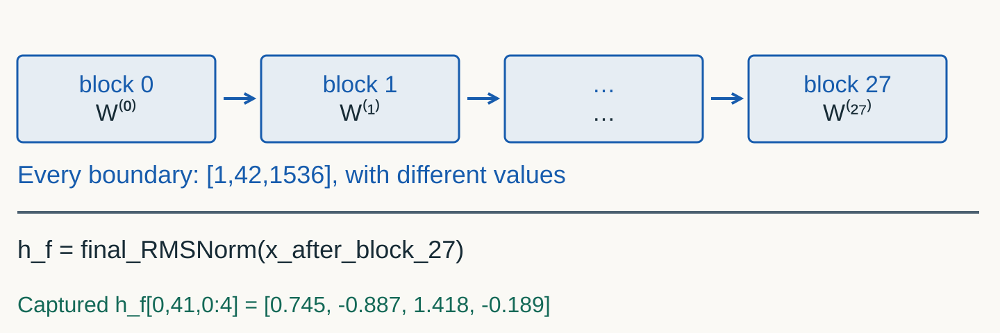
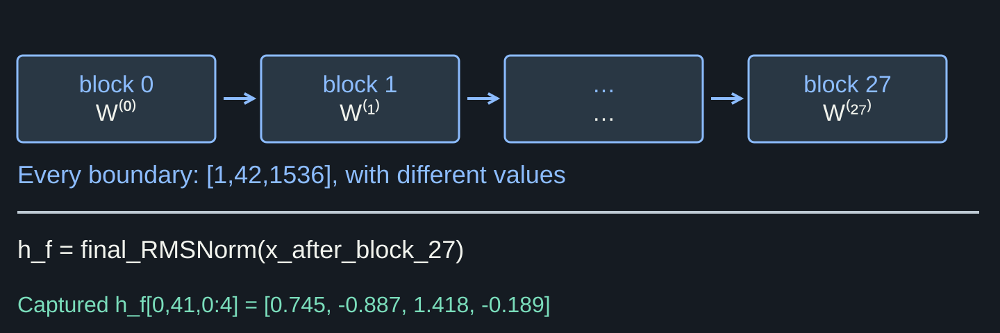
Pinned architecture + captured final norm slice. A repeated block structure does not mean reused weights. Layers depend on earlier layer outputs. Independent heads, token rows and matrix tiles still expose parallel work inside a step. Arithmetic, capture and pinned implementation.Архитектура из конфига + срез финальной нормы. Повтор структуры блоков не значит переиспользование весов. Слои зависят от выходов предыдущих. Независимые головы, строки токенов и тайлы матриц дают параллелизм внутри шага. Арифметика, запись и закреплённая реализация.
Last-position logits select the next tokenЛогиты последней позиции выбирают токен
Equation · axes · worked exampleФормула · оси · разбор примера
\(h_{f}\)[B,\(S_{q}\),1536] in Qwen[B,\(S_{q}\),1536] в QwenFinal RMSNorm after all 28 blocksФинальная RMSNorm после всех 28 блоков
\(W_{vocab}\)[151936,1536] in Qwen[151936,1536] в QwenTied embedding weight; no output biasВес, связанный с эмбеддингами; без смещения
ℓ; y[B,1,151936]; one ID / sequence[B,1,151936]; один IDVocabulary scores, then greedy selectionОценки по словарю, затем жадный выбор
Toy logits ≈ [0.355,0.777,1.037,1.482,0.913]: choose label D. Real Qwen chooses ID 23, “8”.Игрушка ≈ [0.355,0.777,1.037,1.482,0.913]: метка D. Реальный Qwen выбирает ID 23, «8».
Toy labels are unrelated to Qwen tokens. Softmax preserves argmax; selecting an ID does not create its K/V. Full derivation and sources.Игрушечные метки не связаны с токенами Qwen. Softmax сохраняет argmax; выбор ID не создаёт его K/V. Полный вывод и источники.
The selected 8 becomes one new queryВыбранная 8 становится одним новым запросом
Recorded IDs · dependent forward callsЗаписанные ID · зависимые вызовы forward
token IDID токена
28 blocks28 блоков
logits
greedy
consume ID 23потребляет ID 23“8”, position42«8», позиция 42
last-position logitsлогиты последней позиции151936 scores151936 оценок
choose ID 11выбирает ID 11comma, no KV yetзапятая, ещё без KV
consume ID 11потребляет ID 11next forward onlyлишь следующий forward
What persists?Что сохраняется?
42 old K/V rows42 старые строки K/Vreusedповторно
1 new K/V row1 новая строка K/Vappendedдописана
comma ID11запятая ID11next inputследующий вход
One decode query reads a longer historyОдин decode-запрос читает долгую историю
Recorded cache lengths · calculated operation shapesЗаписанные длины кэша · расчётные формы операций
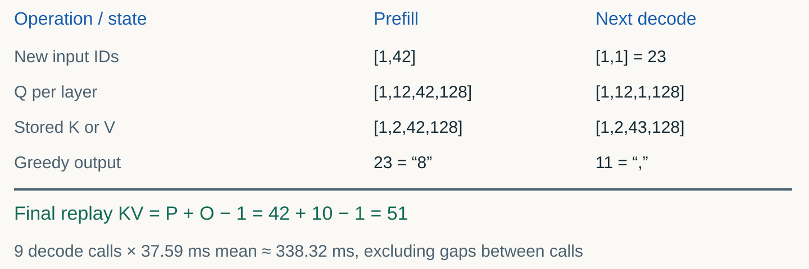
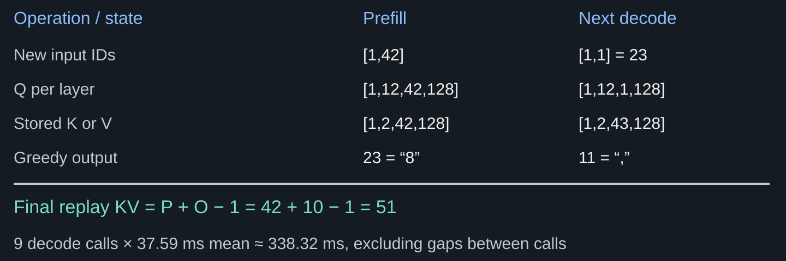
Recorded cache lengths · calculated operation shapes. 5 digit tokens + 2 commas + 2 spaces + 1 EOS = 10. The natural replay stops on EOS; the separate synthetic v2 matrix deliberately ignores it to fix output length. Arithmetic, capture and pinned implementation.Записанные длины кэша · расчётные формы операций. 5 цифр + 2 запятые + 2 пробела + 1 EOS = 10. Естественный replay останавливается на EOS; синтетическая матрица v2 намеренно игнорирует его, фиксируя длину выхода. Арифметика, запись и закреплённая реализация.
The same graph exposes different resource questionsОдин граф раскрывает разные вопросы о ресурсах
Operation map · learner checkpointКарта операций · чекпойнт студента
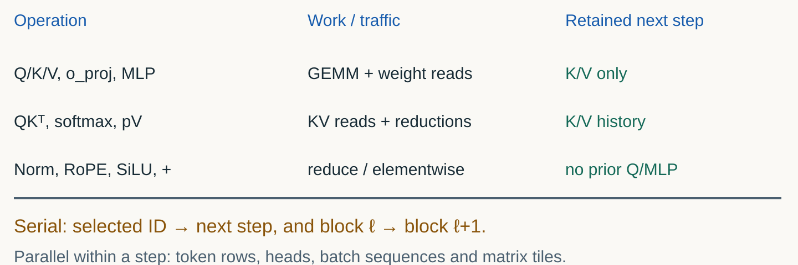
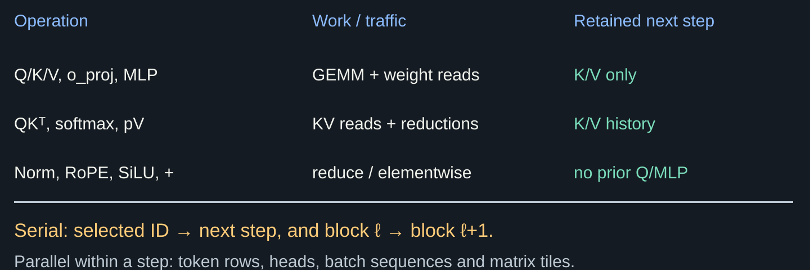
Operation map · learner checkpoint. Checkpoint: where do positions mix, which identity edge carries X1, and why is Q history unnecessary? These dependencies predict what to measure; they do not establish the limiting resource without evidence. Arithmetic, capture and pinned implementation.Карта операций · чекпойнт студента. Чекпойнт: где смешиваются позиции, какое identity-ребро несёт X1 и почему история Q не нужна? Эти зависимости подсказывают, что измерять; без свидетельств они не устанавливают ограничивающий ресурс. Арифметика, запись и закреплённая реализация.
02
Separate the phasesРазделить фазы
Prefill and decode run the same weights through different shapes.Prefill и decode гоняют одни и те же веса через разные шейпы.
The first call consumes the complete chatПервый вызов потребляет весь чат
Recorded forward + argmax · 1.5B. Timer covers forward + greedy selection after input transfer. CPU tokenization, text rendering and resource checks sit outside it. This is one instrumented observation. Recorded evidence / method.Записанные forward + argmax · 1.5B. Таймер покрывает forward + жадный выбор после передачи входа. Токенизация на CPU, рендер текста и проверки ресурсов остаются вне его. Это одно инструментированное наблюдение. Записанное свидетельство / метод.
The next call receives the token just selectedСледующий вызов получает только что выбранный токен
Recorded dependent calls · 1.5BЗаписанные зависимые вызовы · 1.5B
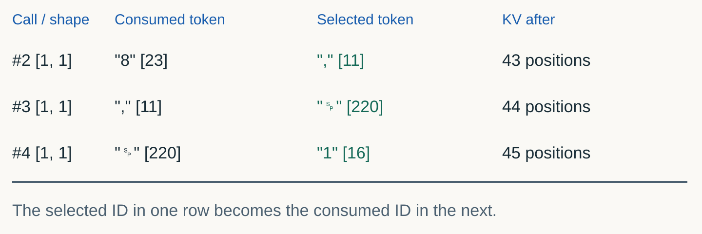
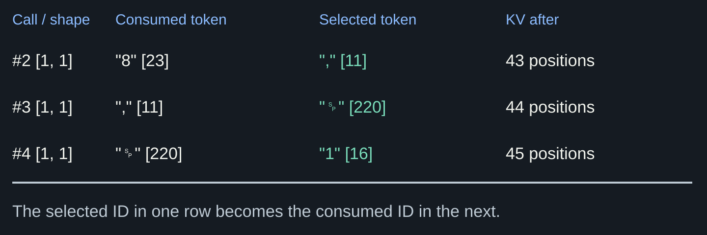
Recorded dependent calls · 1.5B. Rows are actual sequential calls. The input width becomes 1 while the KV history grows. Recorded wall time includes synchronization instrumentation, not network delivery. Recorded evidence / method.Записанные зависимые вызовы · 1.5B. Строки — реальные последовательные вызовы. Ширина входа — 1, история KV растёт. Wall-время включает инструментацию синхронизации, не доставку по сети. Записанное свидетельство / метод.
Dense projections expose the phase through MПлотные проекции выдают фазу через M
Units → example → limitsЕдиницы → пример → границы
Mtoken rowsB × prompt/chunk length for prefill; B for decodeB × длина промпта/чанка для prefill; B для decode
d / doutvalues / rowInput and output widths of the projectionВходная и выходная ширины проекции
Our chat: B=1 and P=42 give prefill M=42; the next decode call has M=1.Наш чат: B=1 и P=42 дают prefill M=42; следующий вызов decode имеет M=1.
Retained context length is not M in decode. The query is new; K/V history can be long.Длина удержанного контекста — не M в decode. Запрос новый; история K/V может быть длинной.
One weight tile, several token rowsОдна плитка весов, несколько строк токенов
Illustrative reuse mechanismИллюстративный механизм переиспользования
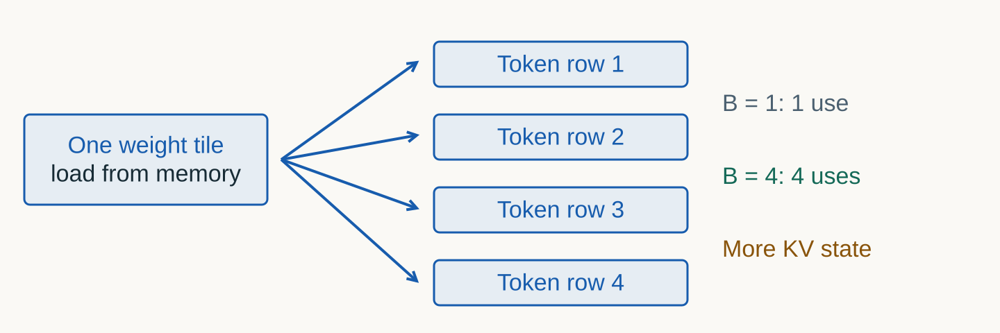
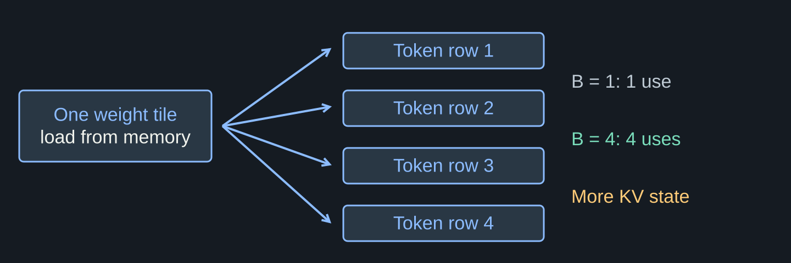
Illustrative reuse mechanism.Иллюстративный механизм переиспользования. Idealized reuse is not guaranteed HBM traffic. Caches, tiling, shapes and other tensors determine realized intensity. Source / method. Идеализированное переиспользование — не гарантированный трафик HBM. Кэши, тайлинг, шейпы и другие тензоры определяют реализованную интенсивность. Источник / метод.
The same request changes the projection shapeТот же запрос меняет форму проекции
Calculated from the recorded input · 1.5BРассчитано из записанного входа · 1.5B
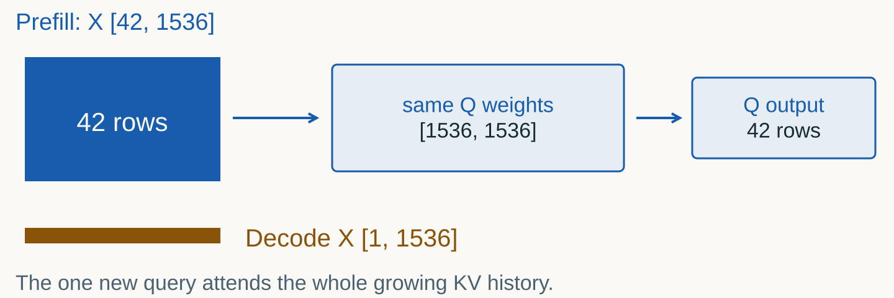
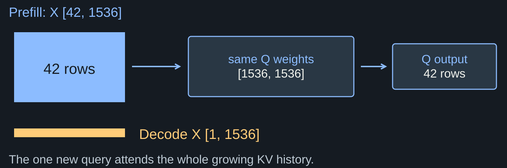
Calculated from the recorded input · 1.5B. A dense Q projection shown as X @ W, before head reshaping. Query head count and width come from the pinned config. KV history length is not the new-query row count. Recorded evidence / method.Рассчитано из записанного входа · 1.5B. Плотная Q-проекция как X @ W, до reshape по головам. Число и ширина Q-голов — из закреплённого конфига. Длина истории KV не равна числу строк нового запроса. Записанное свидетельство / метод.
The (2P) rule estimates dense weight workПравило (2P) оценивает работу плотных весов
Units → example → limitsЕдиницы → пример → границы
Nw × bwbytesDense weights × bytes per stored weightПлотные веса × байты на хранимый вес
BWbytes / secondBandwidth at the declared memory boundaryПропускная способность на заявленной границе памяти
3×10⁹ weights × 2 B ÷ 600×10⁹ B/s = 0.010 s = 10 ms per weight sweep.3×10⁹ весов × 2 B ÷ 600×10⁹ B/s = 0.010 s = 10 ms на проход весов.
Hypothetical 600 GB/s, full streaming assumption. Cache reuse changes traffic; other work can add time.Гипотетические 600 GB/s, допущение полного стриминга. Переиспользование кэша меняет трафик; другая работа может добавлять время.
The shortcut predicts scale—not a traceШорткат предсказывает масштаб, а не трейс
What (2P) omitsЧего (2P) не учитывает
Bad conclusionПлохой вывод
“The model is 3B, therefore every token costs exactly 6 GFLOP.”«Модель 3B, значит каждый токен стоит ровно 6 GFLOP.»
Attention depends on context; embeddings may be tied; MoE activates subsets; kernels add elementwise work; implementations fuse and count operations differently.Attention зависит от контекста; эмбеддинги могут быть связанными; MoE активирует подмножества; кернелы добавляют поэлементную работу; реализации сращивают и считают операции по-разному.
Change the phase; watch the matrix dimension collapseСмените фазу; смотрите, как схлопывается размерность матрицы
independent states; no cached prefillнезависимые состояния; без кэшированного prefill
A long kernel can interrupt a token streamДлинный кернел может прервать поток токенов
Constructed single-device timelineСконструированный таймлайн одного устройства
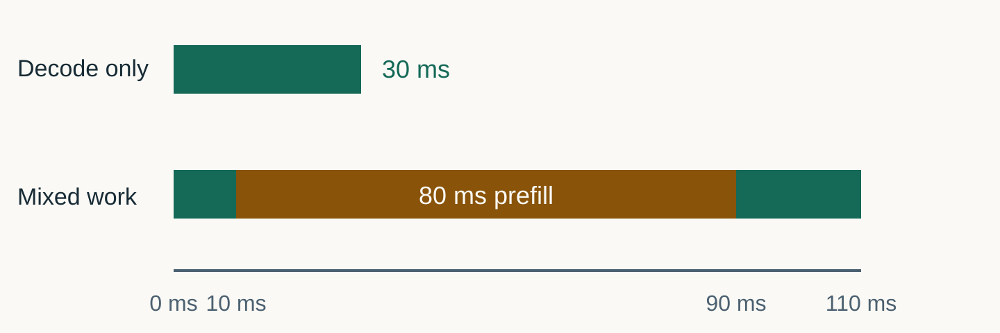
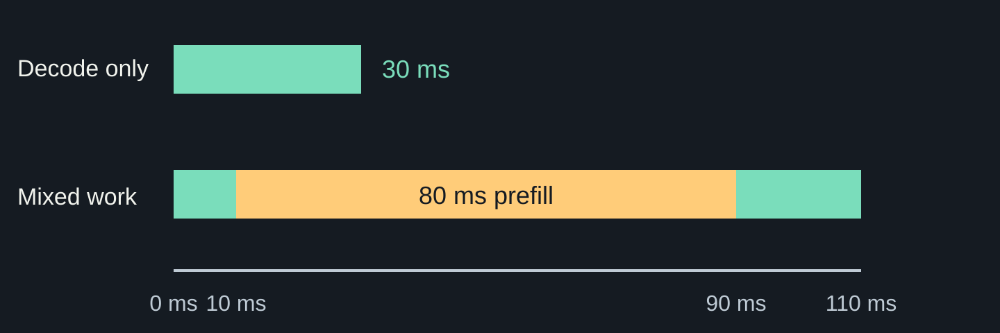
Constructed single-device timeline.Сконструированный таймлайн одного устройства. Illustrative serial schedule, not a measured trace. Chunking/scheduling choices return in Topic 05; faster prefill alone is not a fairness policy. Иллюстративное серийное расписание, а не измеренный трейс. Выборы чанкинга/планирования вернутся в теме 05; быстрый prefill сам по себе — не политика справедливости.
4,096 prompt tokens versus 31 generated steps4,096 токенов промпта против 31 шага генерации
Measured v2 · 1.5B · B1 · FP16. One common time scale, separate phase medians and min–max. Repeated synthetic IDs, not a document. First output belongs to prefill. No HTTP or queue time. Recorded evidence / method.Измерено v2 · 1.5B · B1 · FP16. Одна общая шкала времени, отдельные медианы фаз и min–max. Повторяющиеся синтетические ID, не документ. Первый выход принадлежит prefill. Без HTTP и очереди. Записанное свидетельство / метод.
03
Follow the bytesСледовать за байтами
Capacity tells whether data fits. Bandwidth and reuse tell how fast it feeds compute.Емкость говорит, влезают ли данные. Пропускная способность и переиспользование — как быстро они кормят вычисления.
Bytes cross different physical boundariesБайты пересекают разные физические границы
Logical memory pathЛогический путь памяти
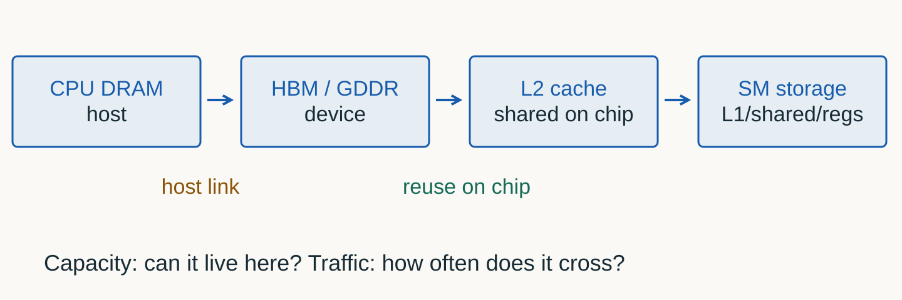
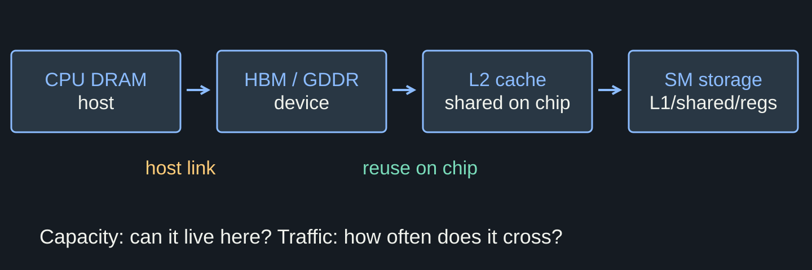
Logical memory path.Логический путь памяти. HBM versus GDDR depends on the GPU. Shared memory/L1 organization is architecture-dependent; this map is not a strict mandatory serial route. Source / method. HBM или GDDR — зависит от GPU. Организация shared memory/L1 зависит от архитектуры; эта карта — не строгий обязательный серийный маршрут. Источник / метод.
Three memory failures need three testsТри памятных отказа требуют три теста
Diagnostic mapДиагностическая карта
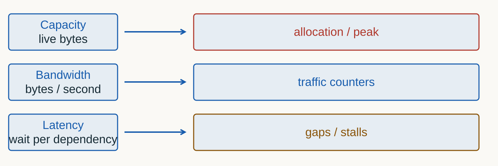
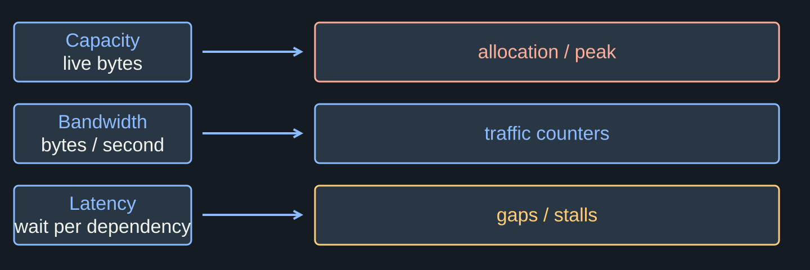
Diagnostic map.Диагностическая карта. An OOM does not prove bandwidth saturation; high free memory does not prove fast access. Choose evidence for the mechanism. Source / method. OOM не доказывает насыщение пропускной способности; много свободной памяти не доказывает быстрый доступ. Выбирайте свидетельства под механизм. Источник / метод.
Tensor role predicts desired placementРоль тензора предсказывает желаемое размещение
But software does not control every hitНо софт контролирует не каждое попадание
Long-livedДолгоживущие
weights: device memory, reused by kernelsвеса: память устройства, переиспользуются кернелами
KV cache: device memory, grows per requestKV-кэш: память устройства, растет на запрос
allocator pools: reserved for reuseпулы аллокатора: зарезервированы для переиспользования
Short-lived / tiledКороткоживущие / плиточные
activations and workspaceактивации и workspace
L2-resident reused lines when luckyпри удаче — переиспользуемые линии в L2
shared-memory tiles and registersплитки shared memory и регистры
Reuse is the bridge from bytes to operationsПереиспользование — мост от байтов к операциям
The performance leverРычаг производительности
DATA REUSE
Perform more useful operations before the same data must be fetched again from a slower memory level.Выполняйте больше полезных операций, прежде чем те же данные придется снова тянуть с более медленного уровня памяти.
Batching reuses weights across token rows; tiling reuses blocks on chip; fusion keeps intermediate values closer to compute.Батчинг переиспользует веса между строками токенов; тайлинг переиспользует блоки на кристалле; сращивание держит промежуточные значения ближе к вычислениям.
Useful bytes and transferred bytes can differПолезные байты и переданные байты могут различаться
Illustrative access patternИллюстративный паттерн доступа
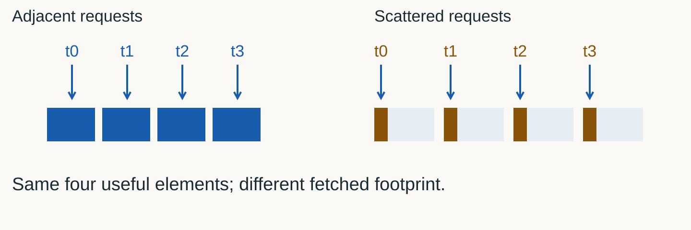
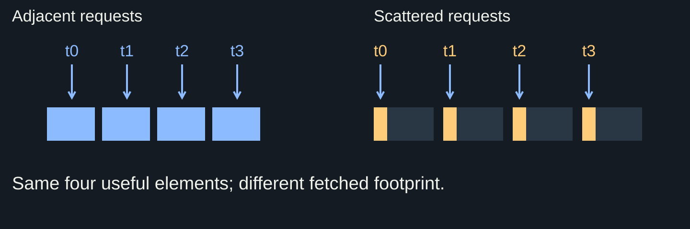
Illustrative access pattern.Иллюстративный паттерн доступа. Segments are schematic, not a claim of a universal CUDA transaction size. Alignment, element width and cache state matter. Source / method. Сегменты схематичны и не утверждают универсальный размер CUDA-транзакции. Выравнивание, ширина элемента и состояние кэша имеют значение. Источник / метод.
Fusion removes intermediate memory tripsСращивание убирает промежуточные ходы в память
Worked traffic accountingРазобранный учет трафика
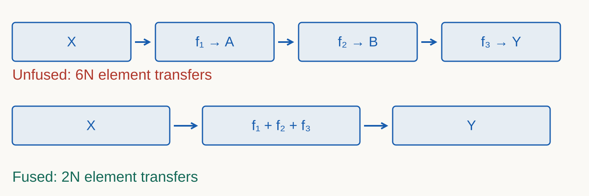
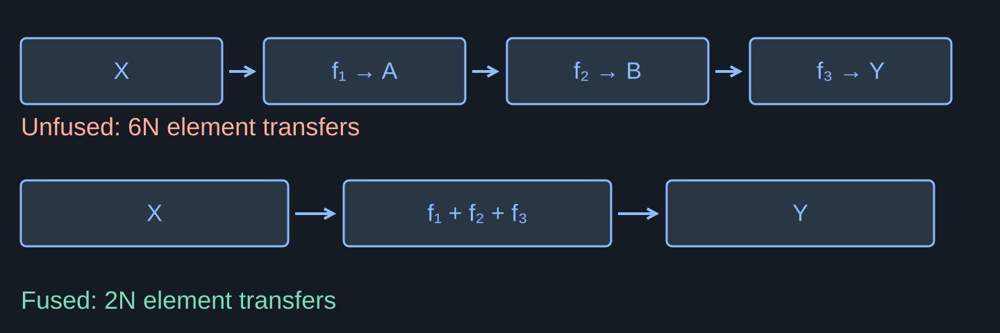
Worked traffic accounting.Разобранный учет трафика. For 1 Mi elements at 2 bytes each: 12 MiB versus 4 MiB idealized payload. This is not a guaranteed threefold wall-time speedup. Source / method. Для 1 Mi элементов по 2 байта: 12 MiB против 4 MiB идеализированного пейлоада. Это не гарантированное трехкратное ускорение по настенным часам. Источник / метод.
Keep attention intermediates close to computeДержите промежуточные данные attention близко к вычислениям
Algorithmic IO sketchАлгоритмический эскиз IO
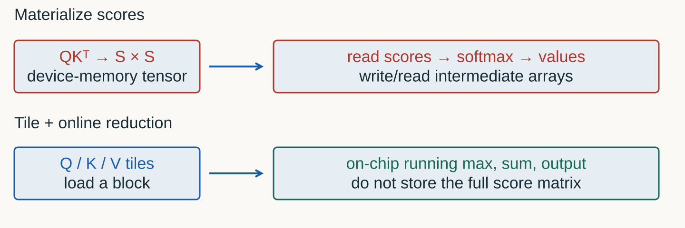
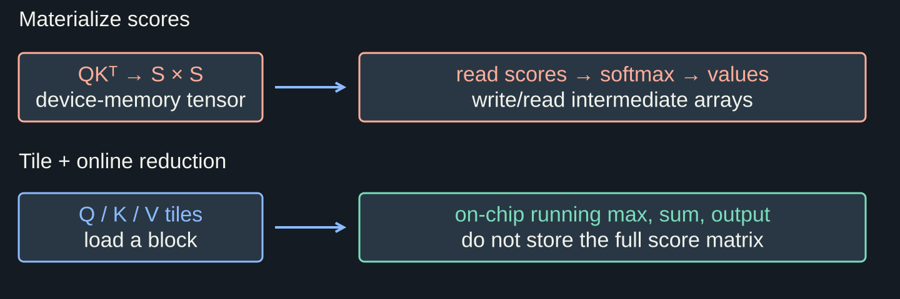
Algorithmic IO sketch.Алгоритмический эскиз IO. Exact attention with floating-point rounding differences; logical persistent KV and the output-token dependency still remain. Source / method. Точный attention с различиями округления плавающей точки; логический постоянный KV и зависимость от выходного токена все еще остаются. Источник / метод.
Online softmax in two blocksOnline softmax в двух блоках
Prediction and revealПредсказание и раскрытие
01
Toy scores [0, ln2, ln4]; values [1,3,5]Игрушечные оценки [0, ln2, ln4]; значения [1,3,5]
First block: \(m=\ln2,\ l=0.5+1=1.5,\ a=0.5\times1+3=3.5\)Блок 1: \(m=\ln2,\ l=0.5+1=1.5,\ a=0.5\times1+3=3.5\)
block 1блок 1
02
New maximum changes the scaleНовый максимум меняет масштаб
Second block: \(m'=\ln4,\ r=e^{m-m'}=0.5\)Блок 2: \(m'=\ln4,\ r=e^{m-m'}=0.5\)
rescaleрескейл
03
Rescale both old sums, then add the new valueПересчитываем старые суммы, добавляем новое
The full softmax also gives 27/7Полный softmax тоже даёт 27/7
Retain a maximum, a denominator and a value numerator. KV growth and serial output steps remain.Храните максимум, знаменатель и числитель значений. Рост KV и serial-шаги выхода остаются.
exact ruleточное правило
Measure useful payload per elapsed secondМерьте полезный пейлоад за прошедшую секунду
Units → example → limitsЕдиницы → пример → границы
Copy 4,096² FP16 values: 67,108,864 B read+write ÷ 0.0002 s = 335.5 GB/s.Копия 4,096² FP16-значений: 67,108,864 B чтение+запись ÷ 0.0002 s = 335.5 GB/s.
Worked copy, not a measured model kernel. Decimal GB=10⁹ B; GiB=2³⁰ B. Fetched traffic can differ.Разобранная копия, а не измеренный кернел модели. Десятичная GB=10⁹ B; GiB=2³⁰ B. Фактический трафик может отличаться.
Ask the memory question preciselyЗадавайте вопрос о памяти точно
weight bytes / bandwidthбайты весов / пропускная способность
effective traffic and kernel roofэффективный трафик и потолок кернела
poor scaling with batchплохое масштабирование с батчем
operations and traffic versus Bоперации и трафик против B
shapes, occupancy, achieved ratesшейпы, occupancy, достигнутые скорости
04
Build a rooflineПостроить roofline
Operations per byte determine which hardware ceiling you meet first.Операции на байт определяют, какой аппаратный потолок вы встретите первым.
Arithmetic intensity connects work to trafficАрифметическая интенсивность связывает работу с трафиком
Units → example → limitsЕдиницы → пример → границы
$$I=\frac{F}{B_{\mathrm{traffic}}}$$
FFLOPOperations in the chosen kernel/workloadОперации в выбранном кернеле/нагрузке
BtrafficbytesTraffic at one explicit memory boundaryТрафик на одной явной границе памяти
IFLOP / byteReuse connects work to data movementПереиспользование связывает работу с движением данных
12 GFLOP ÷ 0.6 GB = 20 FLOP/B. Use consistent decimal units in both terms.12 GFLOP ÷ 0.6 GB = 20 FLOP/B. Используйте согласованные десятичные единицы в обоих членах.
Do not divide total model work by only KV allocation. Live bytes and transferred bytes differ.Не делите всю работу модели на одну лишь аллокацию KV. Живые байты и переданные байты различаются.
Two roofs bound attainable performanceДва потолка ограничивают достижимую производительность
Units → example → limitsЕдиницы → пример → границы
Illustrative roofs, not RTX specifications. A ceiling is not a promise; launch gaps and capacity are absent.Иллюстративные потолки, не спецификации RTX. Потолок — не обещание; пусковые пробелы и емкость отсутствуют.
The ridge is where the active ceiling changesХребет — там, где меняется активный потолок
Units → example → limitsЕдиницы → пример → границы
$$I^*=\frac{P_{\mathrm{compute}}}{BW}$$
I*FLOP / byteIntensity where the two roofs intersectИнтенсивность пересечения двух потолков
Pcompute / BWmatched rate unitsUse the same precision and memory boundaryИспользуйте ту же точность и границу памяти
60×10¹² FLOP/s ÷ 600×10⁹ B/s = 100 FLOP/B; I=20 is left of this ridge.60×10¹² FLOP/s ÷ 600×10⁹ B/s = 100 FLOP/B; I=20 левее этого хребта.
Changing precision may move both the workload point and the compute roof. Do not compare unlike modes.Смена точности может сдвинуть и точку нагрузки, и вычислительный потолок. Не сравнивайте несопоставимые режимы.
Move the workload point across the ridgeДвигайте точку нагрузки через хребет
Interactive upper boundИнтерактивная верхняя граница
MachineМашина
60 TFLOP/s · 600 GB/s60 TFLOP/s · 600 GB/s
RidgeХребет
Change reuse, batch, precision, or tiling only if the implementation truly changes operations or bytes.Меняйте переиспользование, батч, точность или тайлинг, только если реализация действительно меняет операции или байты.
CeilingПотолок
RegimeРежим
IntensityИнтенсивность
A roof bounds rate; it does not promise itПотолок ограничивает скорость, но не обещает ее
Illustrative machine modelИллюстративная модель машины
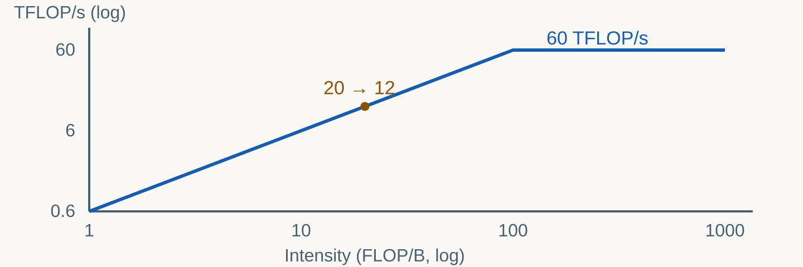
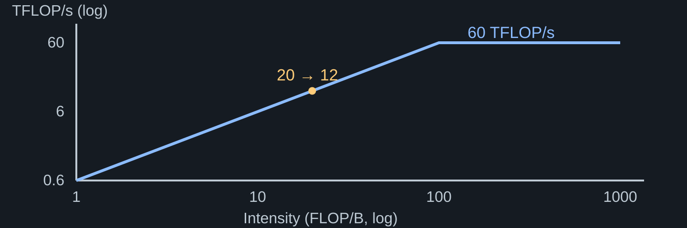
Illustrative machine model.Иллюстративная модель машины. Use matching precision and one declared memory boundary. Values describe a hypothetical machine, not the RTX 5070 Ti specification. Source / method. Используйте сопоставимую точность и одну заявленную границу памяти. Значения описывают гипотетическую машину, а не спецификацию RTX 5070 Ti. Источник / метод.
Batch-1 weight work has low first-order intensityРабота весов при батче 1 имеет низкую интенсивность первого порядка
Units → example → limitsЕдиницы → пример → границы
bwbytes / weightStored weight width, not KV widthШирина хранимых весов, не KV
2NwFLOP / stepDense-weight approximation at one token rowАппроксимация плотных весов на одной строке токенов
FP16 weights: 2/2 = 1 FLOP/B. On the worked 600 GB/s machine, weight-only roof = 0.6 TFLOP/s.FP16-веса: 2/2 = 1 FLOP/B. На разобранной машине с 600 GB/s потолок только весов = 0.6 TFLOP/s.
Assumes weights stream once per step; ignores KV, activations, attention and cache hits.Предполагает, что веса текут раз за шаг; игнорирует KV, активации, attention и попадания в кэш.
An ideal weight-reuse model, not linear speedup. KV traffic, capacity and latency also increase.Идеальная модель переиспользования весов, а не линейное ускорение. Трафик KV, емкость и латентность тоже растут.
Four sequences advance on each batch stepКаждый батч-шаг продвигает 4 последовательности
Measured v2 · P128 · O32 · 1.5B. Five trials per case. Dots illustrate sequence participation, not measured arrival times. Static identical-length batches do not establish service capacity or waiting time. Recorded evidence / method.Измерено v2 · P128 · O32 · 1.5B. Пять прогонов на случай. Точки — участие последовательностей, не измеренные времена прихода. Статичные батчи равной длины не дают ёмкость сервиса или ожидание. Записанное свидетельство / метод.
HBM is not the only traffic boundaryHBM — не единственная граница трафика
Hierarchical rooflineИерархический roofline
BoundaryГраница
QuestionВопрос
Possible evidenceВозможные свидетельства
device memoryпамять устройства
are HBM/GDDR bytes limiting?лимитируют ли байты HBM/GDDR?
DRAM throughput and intensityпропускная способность DRAM и интенсивность
L2L2
is reuse captured on chip?ловится ли переиспользование на кристалле?
are tiles reused efficiently?переиспользуются ли плитки эффективно?
bank conflicts / local trafficконфликты банков / локальный трафик
registersрегистры
does pressure reduce occupancy?давление снижает occupancy?
register count and spillsчисло регистров и спиллы
A memory-bound kernel can keep the GPU “busy”Кернел, ограниченный памятью, может держать GPU «занятым»
Activity is not issue efficiencyАктивность — не эффективность исполнения
Dashboard mythМиф дашборда
“Memory-bound means low GPU utilization.”«Ограничение памятью означает низкую утилизацию GPU.»
Kernels may be continuously active while arithmetic pipelines wait on data. Use achieved bandwidth, compute throughput, stalls, and roof proximity.Кернелы могут быть непрерывно активны, пока арифметические конвейеры ждут данные. Используйте достигнутую пропускную способность, вычислительный темп, простои и близость к потолку.
Below both roofs: separate kernels from gapsНиже обоих потолков: отделите кернелы от пробелов
Constructed 100 ms intervalСконструированный интервал 100 ms
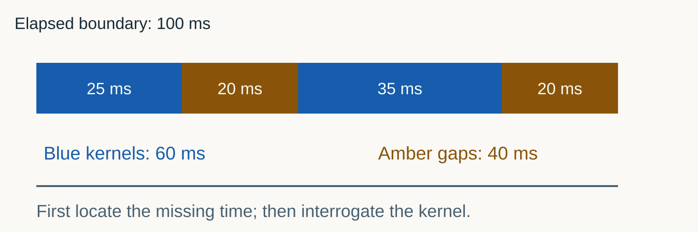
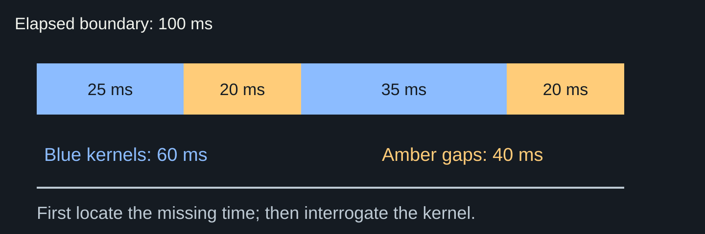
Constructed 100 ms interval.Сконструированный интервал 100 ms. A low achieved rate can reflect insufficient parallelism, dependencies, launch gaps or the wrong roof—not just bad arithmetic code. Source / method. Низкая достигнутая скорость может отражать недостаточный параллелизм, зависимости, пусковые пробелы или неверный потолок — а не только плохой арифметический код. Источник / метод.
Write the omissions beside the rooflineПишите упущения рядом с roofline
Keep the model honestДержите модель честной
OmissionУпущение
Why it mattersПочему это важно
attainable vs advertised peaksдостижимые против рекламных пиков
clocks, precision mode, thermal and power limitsчасы, режим точности, температурные и энергетические лимиты
cache hits and fusionпопадания в кэш и сращивание
actual HBM traffic differs from allocation sizeфактический трафик HBM отличается от размера аллокации
launch and synchronizationзапуски и синхронизация
wall time can include gaps outside kernelsнастенное время может включать пробелы вне кернелов
mixed kernels / phasesсмешанные кернелы / фазы
one point can average incompatible behaviorодна точка может усреднять несовместимое поведение
Make one prediction that can loseСделайте одно предсказание, которое может проиграть
Checkpoint · step with →Контрольная точка · шаги по стрелке →
01
Declare boundaryЗаявите границу
HBM bytes and BF16 FLOPs for decode kernelsБайты HBM и FLOP BF16 для decode-кернелов
scope
02
PredictПредскажите
B=1 lies left of the 100 FLOP/B ridgeB=1 лежит левее хребта 100 FLOP/B
bandwidth
03
FalsifyФальсифицируйте
profile achieved traffic, compute, and time gapsпрофилируйте достигнутый трафик, вычисления и пробелы времени
evidence
05
Budget the KV cacheСоставить бюджет KV-кэша
Saved recomputation becomes growing per-request state.Сэкономленный пересчет превращается в растущее состояние на запрос.
Selected output and cached input differ by one tokenВыбранный выход и вход в кэше различаются на токен
Recorded cache transitions · 1.5BЗаписанные переходы кэша · 1.5B
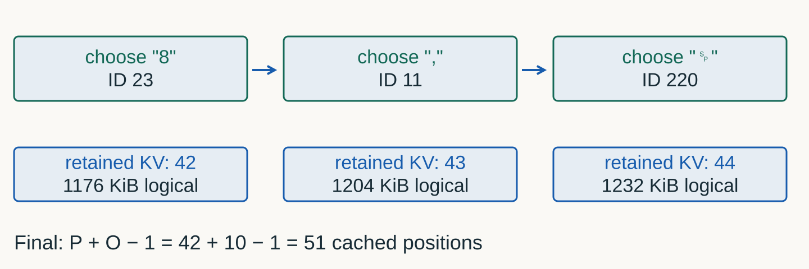
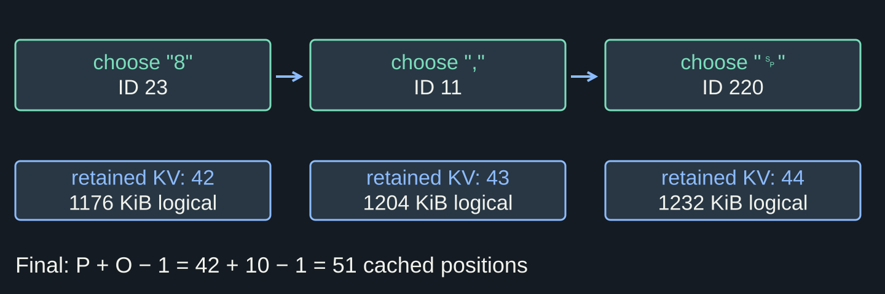
Recorded cache transitions · 1.5B. One selected ID becomes input on the next call. The final stop token has no KV entry because generation ends without feeding it back. Logical KV excludes weights and allocator overhead. Recorded evidence / method.Записанные переходы кэша · 1.5B. Выбранный ID становится входом на следующем вызове. У финального стоп-токена нет записи KV: генерация кончается, не возвращая его. Логический KV не учитывает веса и накладные аллокатора. Записанное свидетельство / метод.
Reuse history; append one positionПереиспользуйте историю; добавьте одну позицию
KV lifecycle · step with →Жизненный цикл KV · шаги по стрелке →
prompt
layer ℓ
KV cache
next token
prefill positionsпозиции prefillS tokensS токенов
store K,Vзаписать K,Vall layersвсе слои
read historyпрочитать историюdecode
append K,V + sampleдобавить K,V + сэмпл+1 position+1 позиция
Per layerНа слой
prefillwrite Sзапись S
decoderead historyчтение истории
appendwrite 1запись 1
Derive cache bytes from model structureВыведите байты кэша из структуры модели
Units → example → limitsЕдиницы → пример → границы
$$K_{\mathrm{token}}=2L H_{kv}d_hb$$
2LK/V arrays × layersTwo stored vectors in each decoder layerДва хранимых вектора в каждом слое декодера
Hkv × dhvalues / vectorKV heads, not query headsKV-головы, а не query-головы
bbytes / valueActual KV-cache element precisionФактическая точность элементов KV-кэша
2 × 36 × 2 × 128 × 2 B = 36,864 B/token = 36 KiB/token for pinned Qwen2.5-3B.2 × 36 × 2 × 128 × 2 B = 36,864 B/token = 36 KiB/token для закрепленного Qwen2.5-3B.
Logical payload only. Does not include weights, block rounding, workspace or allocator pools.Только логический пейлоад. Не включает веса, округление блоков, workspace или пулы аллокатора.
Query heads are not stored KV headsQ-головы — не сохранённые KV-головы
Transfer example · Qwen2.5-3BПример переноса · Qwen2.5-3B
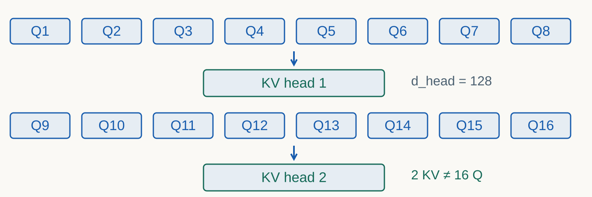
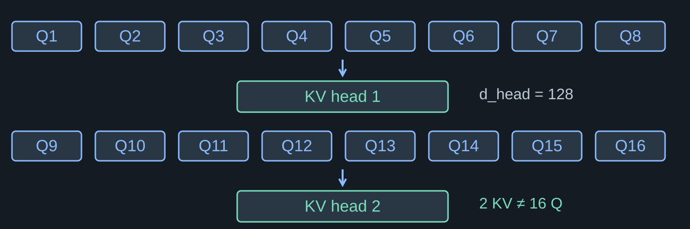
Transfer example · Qwen2.5-3B. Sharing K/V changes stored width. Replacing two KV heads with sixteen is a storage counterfactual, not a quality-equivalent model conversion. Recorded evidence / method.Пример переноса · Qwen2.5-3B. Разделение K/V меняет сохраняемую ширину. Две KV-головы вместо шестнадцати — контрфактический расчёт хранения, не конверсия с тем же качеством. Записанное свидетельство / метод.
Transfer example: 3B uses 36 KiB per tokenПример переноса: 3B тратит 36 KiB на токен
Config-derived · step with →Из конфига · шаги по стрелке →
64 × (512 + 256)token positionsConservative B × (prompt + output) allowanceКонсервативная надбавка B × (промпт + выход)
36 KiB/tokenbytes per positionPinned 3B model at 2-byte KV precisionЗакрепленная модель 3B при точности KV в 2 байта
49,152 positions × 36,864 B = 1,811,939,328 B; divide by 2³⁰ for GiB.49,152 позиций × 36,864 B = 1,811,939,328 B; делите на 2³⁰ для GiB.
P+O is a conservative budget; after the lab’s last selection actual cache length is P+O−1.P+O — консервативный бюджет; после последнего выбора в лабе фактическая длина кэша — P+O−1.
Sixteen KV heads make the same payload 8× largerШестнадцать KV-голов делают тот же пейлоад в 8× больше
Units → example → limitsЕдиницы → пример → границы
16 / 2KV-head ratioChange only the stored-head count in this calculationВ этом расчете меняется только число хранимых голов
1.6875 GiBlogical payloadSame 49,152 token positions at two KV headsТе же 49,152 позиций токенов при двух KV-головах
Per-token payload rises from 36 to 288 KiB. Eight times the KV heads means eight times these bytes.Пейлоад на токен растет с 36 до 288 KiB. Восемь раз больше KV-голов — восемь раз больше этих байтов.
Storage counterfactual, not an equally accurate model. It still excludes weights and runtime overhead.Контрфактический перенос хранения, а не одинаково точная модель. Он по-прежнему исключает веса и оверхед рантайма.
Admission must budget tokens—not requestsДопуск должен бюджетить токены, а не запросы
Interactive KV capacityИнтерактивная емкость KV
2 × 36 layers × Hkv × 128 × bytes
Logical KV payload against an illustrative 8 GiB budget.Логический пейлоад KV против иллюстративного бюджета 8 GiB.
Per tokenНа токен
Live tokensЖивые токены
KV payloadПейлоад KV
Budget resultИтог бюджета
What stays resident is not what is read per secondЧто остается резидентным — не то, что читается в секунду
Illustrative KV lifecycleИллюстративный жизненный цикл KV
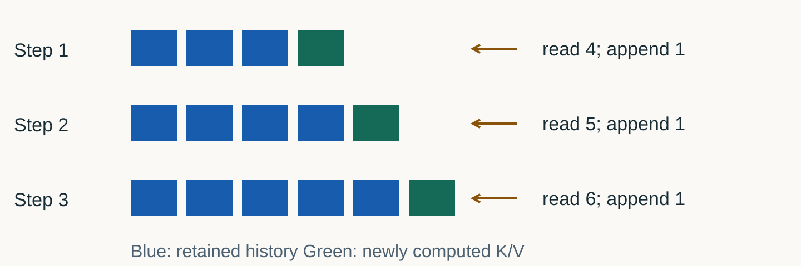
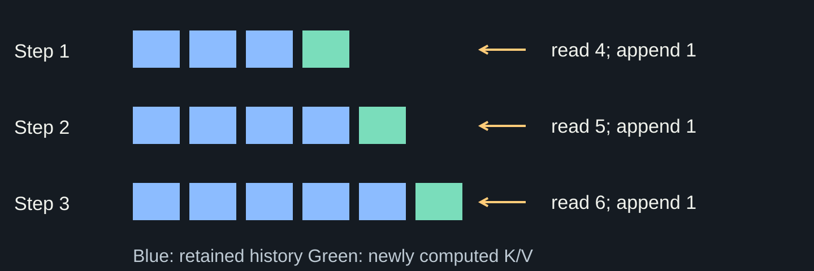
Illustrative KV lifecycle.Иллюстративный жизненный цикл KV. A logical history-access count is not measured HBM traffic. The selected token has no cache entry until the next forward pass. Логический счет обращений к истории — не измеренный трафик HBM. У выбранного токена нет записи в кэше до следующего forward-прохода.
History length grows every decode stepДлина истории растет на каждом шаге decode
Units → example → limitsЕдиницы → пример → границы
P / Dprompt positions / stepsThe first output is selected during prefillПервый выход выбирается во время prefill
Adecodequery–key pairs / headSum of attended positions over D decode queriesСумма посещаемых позиций по D decode-запросам
P=512, O=256 → D=255 → 255×512 + 255×256/2 = 163,200 pairs per head.P=512, O=256 → D=255 → 255×512 + 255×256/2 = 163,200 пар на голову.
Includes each current query position. Multiply by heads/layers for broader work; not measured HBM bytes.Включает каждую текущую позицию запроса. Умножайте на головы/слои для более широкой работы; это не измеренные байты HBM.
More logical KV can leave the measured peak unchangedБольше логического KV может не менять измеренный пик
Measured peak + calculated KV · 1.5B. KV uses 28 KiB per retained position for this 1.5B config. Peak allocated includes other tensors and can occur earlier. Allocated is inside reserved, never an additive extra. Recorded evidence / method.Измеренный пик + расчётный KV · 1.5B. Для этого конфига 1.5B KV занимает 28 KiB на удержанную позицию. Пик allocated включает другие тензоры и может наступать раньше. Allocated внутри reserved, это не аддитивная надбавка. Записанное свидетельство / метод.
Identical prefixes can share work—not all stateИдентичные префиксы могут делить работу — но не все состояние
Illustrative prefix ownershipИллюстративное владение префиксами
Illustrative prefix ownership.Иллюстративное владение префиксами. This is the ownership question; cache-key design and block implementation belong to later engine topics. Similar text is not necessarily identical token state. Это вопрос владения; дизайн ключей кэша и блочная реализация относятся к поздним темам о движках. Похожий текст — не обязательно идентичное токен-состояние.
Four tickets can be larger than fortyЧетыре заявки могут оказаться больше сорока
A request-count limit treats a 32-token completion and a 32k-token context as equals. The allocator cannot.Лимит по числу запросов считает 32-токенное завершение и 32k-токенный контекст равными. Аллокатор так не умеет.
Fit the workload before launching itУместите нагрузку до ее запуска
Capacity checklistЧек-лист емкости
InputВход
Evidence sourceИсточник свидетельств
Do not guess fromНе угадывайте из
layers, Q/KV heads, head dimensionслои, Q/KV-головы, размерность головы
pinned model configзакрепленная конфигурация модели
parameter count aloneодно лишь число параметров
cache dtypedtype кэша
runtime configurationконфигурация рантайма
weight dtypedtype весов
live token distributionживое распределение токенов
workload + scheduler stateнагрузка + состояние планировщика
request countчисло запросов
usable budgetпригодный бюджет
measured post-load headroomизмеренный запас после загрузки
device total VRAMвся VRAM устройства
06
Profile in layersПрофилировать послойно
User clock first. Timeline second. Kernel counters only when the question demands them.Сначала часы пользователя. Потом таймлайн. Счетчики кернелов — только когда вопрос их требует.
Choose the instrument from the questionВыбирайте инструмент из вопроса
Four layers of evidenceЧетыре слоя свидетельств
InstrumentИнструмент
Best questionЛучший вопрос
Blind spotСлепое пятно
wall clock / request traceнастенные часы / трейс запроса
what did the user wait for?чего ждал пользователь?
kernel mechanismмеханизм кернела
CUDA eventsCUDA events
how long was this device interval?какой длины этот интервал устройства?
not kernel attribution; no HTTP queueне атрибуция кернелов; без HTTP-очереди
system timelineсистемный таймлайн
where are launches, copies, gaps, overlap?где запуски, копии, пробелы, перекрытия?
deep kernel countersглубокие счетчики кернелов
kernel profilerпрофилировщик кернелов
why is this kernel below a roof?почему этот кернел ниже потолка?
Constructed asynchronous timeline.Сконструированный асинхронный таймлайн. Event intervals can include idle time while Python launches later kernels. Do not label them summed CUDA kernel time. Source / method. Интервалы событий могут включать простой, пока Python запускает следующие кернелы. Не подписывайте их суммарным временем CUDA-кернелов. Источник / метод.
Two clocks around the same recorded callДва таймера вокруг одного записанного вызова
Measured instrumented replay · 1.5B. One warmed request, with a synchronization at every step. Both clocks can include launch gaps. The replay also records whole instrumented request time, which includes inspection between calls. Recorded evidence / method.Инструментированный replay · 1.5B. Один прогретый запрос с синхронизацией на каждом шаге. Оба таймера могут включать лаунч-промежутки. Replay также записывает время всего инструментированного запроса, включая проверки между вызовами. Записанное свидетельство / метод.
A repeatable profile is stagedПовторяемый профиль — это протокол
Protocol · step with →Протокол · шаги по стрелке →
Recorded trace excerpt · 0.5B · P128/O8. Synthetic input, profiled execution. Top: start markers, not duration bars. Bottom: first pair on a 50 µs zoom. Correlation links the events but does not prove the cause of the gap. Recorded evidence / method.Фрагмент записанной трассы · 0.5B · P128/O8. Синтетический вход, профилированное исполнение. Верх: маркеры старта, не длительности. Низ: первая пара на зуме 50 µs. Корреляция связывает события, но не доказывает причину зазора. Записанное свидетельство / метод.
A timeline and a kernel counter answer different questionsТаймлайн и счетчик кернела отвечают на разные вопросы
Evidence-to-instrument map.Карта свидетельство-инструмент. Do not infer HBM saturation from an operator name or a GPU-utilization percentage. Profile the shape and phase that produced the symptom. Source / method. Не выводите насыщение HBM из имени оператора или процента утилизации GPU. Профилируйте шейп и фазу, породившие симптом. Источник / метод.
Instrumentation changes the thing observedИнструментирование меняет наблюдаемое
Control the observer effectКонтролируйте эффект наблюдателя
01
Baseline runБейзлайн-прогон
uninstrumented latency and throughput distributionраспределение латентности и throughput без инструментов
product truth
02
Focused captureПрицельный съем
few warm iterations inside an explicit rangeнесколько теплых итераций внутри явного диапазона
mechanism
03
Re-run baselineПовторите бейзлайн
verify the proposed change without profiler overheadпроверьте предложенное изменение без оверхеда профилировщика
causality
Select the next instrument from the traceВыберите следующий инструмент из трейса
Interactive triage · step with →Интерактивная триажировка · шаги по стрелке →
A
Long launch gaps between short kernelsДлинные пусковые пробелы между короткими кернелами
trace queue, tokenizer, transfers, API bufferingтрейсите очередь, токенизатор, передачи, буферизацию API
request trace
D
OOM only at long contextsOOM только на длинных контекстах
recompute logical budget and capture allocation timelineпересчитайте логический бюджет и снимите таймлайн аллокаций
memory
Optimize the share of wall time, not a table rankОптимизируйте долю настенного времени, а не место в таблице
Worked Amdahl exampleРазобранный пример Амдала
Worked Amdahl example.Разобранный пример Амдала. Assumes unchanged other work and no overlap. A 3% time reduction is a 100/97−1 = 3.09% throughput speedup for serial repetitions. Предполагает неизменной остальную работу и без перекрытий. Сокращение времени на 3% — это ускорение throughput на 100/97−1 = 3.09% для серийных повторений.
A completed cache-reuse experimentЗавершённый эксперимент с переиспользованием кэша
Prediction and revealПредсказание и раскрытие
01
Hypothesis: the same prefix is projected repeatedlyГипотеза: тот же префикс проецируется повторно
CPU toy: 42 fixed input rows + 9 new rows; same weights, positions and last logits.CPU-игрушка: 42 старые входные строки + 9 новых; те же веса, позиции, последние логиты.
controlledконтролируемый
02
Baseline: count calls inside Q/K/V linear functionsБаза: считаем вызовы внутри линейных функций Q/K/V
Intervention: retain old K/V; project only new rowsВмешательство: храним старые K/V, проецируем новое
3 × 51 = 153 calls. Compare all ten logit vectors with tolerance 10⁻¹².3 × 51 = 153 вызова. Сравните все десять векторов логитов с допуском 10⁻¹².
recheckedперепроверено
04
1242 redundant calls removed; no GPU speedup claimУбрано 1242 лишних вызова; GPU-ускорение не заявляется
Attention still reads history. Historical GPU A/B in Book; stop on OOM, memory growth or output mismatch.Attention читает историю. Исторический GPU A/B — в Book; стоп на OOM, росте памяти, расхождении выхода.
boundedограничен
07
Reconcile evidenceСверить свидетельства
The seminar starts with a prediction and ends with an explained disagreement.Семинар начинается с предсказания и заканчивается объясненным расхождением.
One required protocol across slides, Book and labОдин обязательный протокол на слайдах, в Книге и в лабе
Executable lab protocol v2.Исполняемый протокол лабы v2. B1/128/32 is the matched control for B4. Output 512 and B8 are optional extensions. Every core trial is checkpointed; partial is not complete. Source / method. B1/128/32 — согласованный контроль для B4. Выход 512 и B8 — опциональные расширения. Каждое основное испытание закоммичено; частичное — не завершенное. Источник / метод.
The same prefill shape has different observed mediansУ одной формы prefill — разные наблюдаемые медианы
Measured v2 · unresolved variation. Same initial token IDs, dtype and prefill API. Five raw trials per group. Future O controls the later loop only. Runtime/order variation remains a hypothesis, not a diagnosed cause. Recorded evidence / method.Измерено v2 · необъяснённый разброс. Те же начальные ID токенов, dtype и API prefill. Пять сырых прогонов на группу. Будущий O управляет лишь поздним циклом. Разброс runtime/порядка — гипотеза, не диагностированная причина. Записанное свидетельство / метод.
A different median needs a discriminating testДругая медиана требует разрешающего теста
Prediction and revealПредсказание и раскрытие
01
PredictionПредсказание
Identical initial IDs and prefill call should not depend on future OОдинаковые начальные ID и вызов prefill не должны зависеть от будущего O
same inputтот же вход
02
ObservationНаблюдение
P128 groups: prefill medians 22.3 ms versus 64.6 msГруппы P128: медианы prefill 22.3 ms против 64.6 ms
five trialsпять прогонов
03
What the data leave openЧто данные не закрывают
The ranges overlap; no established cause for the variationДиапазоны перекрываются; установленной причины разброса нет
uncertainнеясно
04
Next bounded experimentСледующий ограниченный эксперимент
Repeat identical prefills in interleaved order; record clocks and host activityПовторите одинаковые prefill, чередуя порядок; записывайте часы и активность хоста
falsifiableфальсифицируемо
Batch four raises aggregate rate in this runБатч четыре поднимает агрегатную скорость в этом прогоне
Measured v2 · focused 0.5B traces.Измерено v2 · прицельные трейсы 0.5B. Stacked totals summarize durations, not event order. Copies/other categories are excluded. Profiling adds overhead; do not apply these shares to unprofiled service latency. Raw evidence / method. Суммы с накоплением резюмируют длительности, а не порядок событий. Категории копий/прочего исключены. Профилирование добавляет оверхед; не переносите эти доли на непрофилированную латентность сервиса. Сырые свидетельства / метод.
The payoffИтог
Do not optimize the component with the loudest dashboard. Predict the active constraint, measure the right boundary, and explain what disagreed.Не оптимизируйте компонент с самым громким дашбордом. Предскажите активное ограничение, мерьте правильную границу и объясните, что разошлось.
Primary sources and specificationsПервичные источники и спецификации
Required self-studyОбязательное самостоятельное изучение
What would prove your bottleneck wrong?Что доказало бы, что ваше узкое место неверно?
Name the phase, calculate one ceiling, and choose the observation that could falsify it. Next: change the bytes with quantization—without losing sight of quality.Назовите фазу, посчитайте один потолок и выберите наблюдение, которое могло бы его фальсифицировать. Далее: меняем байты квантованием — не выпуская из виду качество.